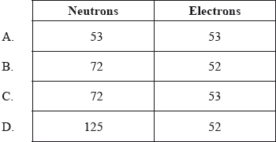
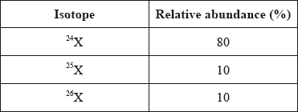
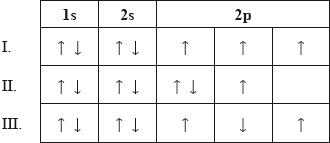

HL Paper 1
Which quantities are the same for all atoms of chlorine?
I. Number of protons
II. Number of neutrons
III. Number of electrons
A. I and II only
B. I and III only
C. II and III only
D. I, II and III
Markscheme
B
Examiners report
The table below shows the number of protons, neutrons and electrons present in five species.

Which two species are isotopes of the same element?
A. X and W
B. Y and Z
C. Z and W
D. W and Q
Markscheme
D
Examiners report
What is the order of increasing energy of the orbitals within a single energy level?
A. \({\text{d}} < {\text{s}} < {\text{f}} < {\text{p}}\)
B. \({\text{s}} < {\text{p}} < {\text{d}} < {\text{f}}\)
C. \({\text{p}} < {\text{s}} < {\text{f}} < {\text{d}}\)
D. \({\text{f}} < {\text{d}} < {\text{p}} < {\text{s}}\)
Markscheme
B
Examiners report
Which species possesses only two unpaired electrons?
A. Zn
B. Mg
C. \({\text{T}}{{\text{i}}^{2 + }}\)
D. \({\text{F}}{{\text{e}}^{2 + }}\)
Markscheme
C
Examiners report
Which species has the electron configuration of \({\text{1}}{{\text{s}}^{\text{2}}}{\text{2}}{{\text{s}}^{\text{2}}}{\text{2}}{{\text{p}}^{\text{6}}}{\text{3}}{{\text{s}}^{\text{2}}}{\text{3}}{{\text{p}}^{\text{6}}}{\text{3}}{{\text{d}}^{\text{8}}}\)?
A. Ni
B. \({\text{N}}{{\text{i}}^{2 + }}\)
C. Fe
D. \({\text{C}}{{\text{u}}^{2 + }}\)
Markscheme
B
Examiners report
Which representation would be correct for a species, Z, which has 31 protons, 40 neutrons and 28 electrons?
A. \({}_{31}^{71}{{\rm{Z}}^{3 + }}\)
B. \({}_{31}^{71}{{\rm{Z}}^{3 - }}\)
C. \({}_{40}^{71}{{\rm{Z}}^{3 + }}\)
D. \({}_{28}^{71}{{\rm{Z}}^{3 + }}\)
Markscheme
A
Examiners report
What is the correct electron configuration of the \({\text{C}}{{\text{u}}^ + }\) ion?
A. \({\text{[Ar] 3}}{{\text{d}}^{\text{9}}}{\text{ 4}}{{\text{s}}^{\text{1}}}\)
B. \({\text{[Ar] 3}}{{\text{d}}^{\text{7}}}{\text{ 4}}{{\text{s}}^{\text{2}}}\)
C. \({\text{[Ar] 3}}{{\text{d}}^{{\text{10}}}}\)
D. \({\text{[Ar] 3}}{{\text{d}}^{\text{8}}}{\text{ 4}}{{\text{s}}^{\text{1}}}\)
Markscheme
C
Examiners report
One respondent stated that the question should not have been asked, as students are not supposed to know the Cu exception. In the teacher’s notes of assessment statement 12.1.6 in the syllabus details it is clearly stated “exceptions to the principle for copper and chromium should be known”. 56.49% of the candidates chose the correct answer C, with 30.78% choosing A which means that about one-third of the schools do not teach these two exceptions.
What is the electron configuration of vanadium?
A. \({\text{1}}{{\text{s}}^{\text{2}}}{\text{2}}{{\text{s}}^{\text{2}}}{\text{2}}{{\text{p}}^{\text{6}}}{\text{3}}{{\text{s}}^{\text{2}}}{\text{3}}{{\text{p}}^{\text{6}}}{\text{3}}{{\text{d}}^{\text{2}}}{\text{4}}{{\text{s}}^{\text{3}}}\)
B. \({\text{1}}{{\text{s}}^{\text{2}}}{\text{2}}{{\text{s}}^{\text{2}}}{\text{2}}{{\text{p}}^{\text{6}}}{\text{3}}{{\text{s}}^{\text{2}}}{\text{3}}{{\text{p}}^{\text{6}}}{\text{3}}{{\text{d}}^{\text{3}}}{\text{4}}{{\text{s}}^{\text{2}}}\)
C. \({\text{1}}{{\text{s}}^{\text{2}}}{\text{2}}{{\text{s}}^{\text{2}}}{\text{2}}{{\text{p}}^{\text{6}}}{\text{3}}{{\text{s}}^{\text{2}}}{\text{3}}{{\text{p}}^{\text{6}}}{\text{3}}{{\text{d}}^{\text{4}}}{\text{4}}{{\text{s}}^{\text{1}}}\)
D. \({\text{1}}{{\text{s}}^{\text{2}}}{\text{2}}{{\text{s}}^{\text{2}}}{\text{2}}{{\text{p}}^{\text{6}}}{\text{3}}{{\text{s}}^{\text{2}}}{\text{3}}{{\text{p}}^{\text{6}}}{\text{3}}{{\text{d}}^{\text{5}}}\)
Markscheme
B
Examiners report
On one of the G2’s it was stated that it would have been better if the 3d level was placed after the 4s level. It is true that in many textbooks that the electron configuration of V is written as \({\text{1}}{{\text{s}}^{\text{2}}}{\text{2}}{{\text{s}}^{\text{2}}}{\text{2}}{{\text{p}}^{\text{6}}}{\text{3}}{{\text{s}}^{\text{2}}}{\text{3}}{{\text{p}}^{\text{6}}}{\text{4}}{{\text{s}}^{\text{2}}}{\text{3}}{{\text{d}}^{\text{3}}}\). However, most candidates (72.19%) gave B as the correct answer.
What are the numbers of neutrons and electrons in the iodine ion, \(^{{\text{125}}}{{\text{I}}^ + }\)?

Markscheme
B
Examiners report
What is the abbreviated electron configuration of the telluride ion, \({\text{T}}{{\text{e}}^{2 - }}\)?
A. \({\text{[Kr]5}}{{\text{s}}^{\text{2}}}{\text{5}}{{\text{d}}^{{\text{10}}}}{\text{5}}{{\text{p}}^{\text{6}}}\)
B. \({\text{[Kr]5}}{{\text{s}}^{\text{2}}}{\text{4}}{{\text{d}}^{{\text{10}}}}{\text{5}}{{\text{p}}^{\text{2}}}\)
C. \({\text{[Kr]5}}{{\text{s}}^{\text{2}}}{\text{4}}{{\text{d}}^{{\text{10}}}}{\text{5}}{{\text{p}}^{\text{4}}}\)
D. \({\text{[Kr]5}}{{\text{s}}^{\text{2}}}{\text{4}}{{\text{d}}^{{\text{10}}}}{\text{5}}{{\text{p}}^{\text{6}}}\)
Markscheme
D
Examiners report
Consider the relative abundance of the isotopes of element X.

What is the relative atomic mass of X?
A. 24
B. 25
C. Between 24 and 25
D. Between 25 and 26
Markscheme
C
Examiners report
In the electromagnetic spectrum, which will have the shortest wavelength and the greatest energy?

Markscheme
A
Examiners report
Which shows the sub-levels in order of increasing energy in the fourth energy level of an atom?
A. \({\text{f}} < {\text{d}} < {\text{p}} < {\text{s}}\)
B. \({\text{p}} < {\text{d}} < {\text{f}} < {\text{s}}\)
C. \({\text{d}} < {\text{f}} < {\text{p}} < {\text{s}}\)
D. \({\text{s}} < {\text{p}} < {\text{d}} < {\text{f}}\)
Markscheme
D
Examiners report
What is the electron configuration of the \({\text{C}}{{\text{r}}^{2 + }}\) ion?
A. \({\text{[Ar]3}}{{\text{d}}^{\text{5}}}{\text{4}}{{\text{s}}^{\text{1}}}\)
B. \({\text{[Ar]3}}{{\text{d}}^{\text{3}}}{\text{4}}{{\text{s}}^{\text{1}}}\)
C. \({\text{[Ar]3}}{{\text{d}}^{\text{6}}}{\text{4}}{{\text{s}}^{\text{1}}}\)
D. \({\text{[Ar]3}}{{\text{d}}^{\text{4}}}{\text{4}}{{\text{s}}^{\text{0}}}\)
Markscheme
D
Examiners report
Which statement correctly describes the atomic emission spectrum of hydrogen?
A. It is a continuous spectrum converging at high frequency.
B. It is a line spectrum converging at high frequency.
C. It is a continuous spectrum converging at low frequency.
D. It is a line spectrum converging at low frequency.
Markscheme
B
Examiners report
Which electron configurations do not follow the Hund's rule?

A. I and II only
B. I and III only
C. II and III only
D. I, II and III
Markscheme
C
Examiners report
Many G2s and OCC forum comments were made by teachers as reference had been made to the Aufbau principle instead of just Hund´s rule. This was however no problem for the students as 88% recognised that options II and III are incorrect electron configurations.